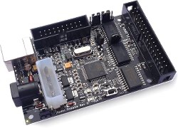
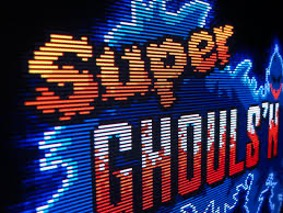
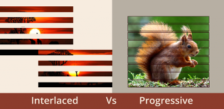
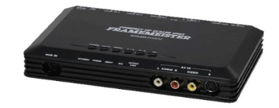
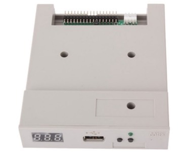
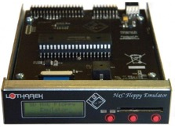
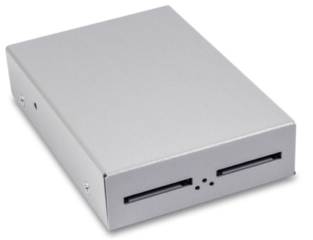
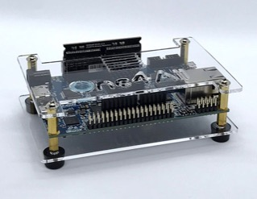

Appendix I: Conservation and Preservation of Demos
This first appendix examines the technical options to preserve demos on the Atari ST and other retro computers, many of which have been pioneered by the retro-gaming community.
The main investigation areas presented herein are the methods for capturing and preserving files from obsolete media, finding the right screens to display demo art authentically, running demos on original hardware and enhanced original hardware, and finally, the options that emulation and FPGAs offer for the future conservation of demo art.
A1.1. Running the Demos on Original Hardware
Once the demo files have been salvaged, the demos can be run on the original computers they were created on. While here are other options, too, the original hardware provides the most authentic experience.
Emulators on modern hardware are very advanced and precise, but demos tax the hardware and use tricks that, in some cases, can cause graphics glitches and timing issues.
In the case of The Exceptions' demos, that would mean setting up an original Atari ST, built and sold in 1986 or 1987. Later revisions of the Atari hardware can cause incompatibilities (particularly the enhanced STE models released in 1989).
This thirty-year-old hardware is still available in a functional state on the secondhand market. When well maintained, the STs still work as originally designed. Only the capacitors on the ST's motherboard can be an issue, as they were never engineered for decades of use. They can leak acid onto the board and cause corrosion of the circuits, but they are easily replaced with modern capacitors.
Demos on the Atari ST were stored on floppy disks, which are notoriously error-prone due to demagnetization and corrosion. Disks from the late 1980s and early 1990s are mostly unusable thirty years later; therefore, that data needs to be salvaged.
Fortunately, the actual executable files of most demos on the Atari ST were salvaged in the early 2000s by demoscene members. They are stored as disk images, exact representations of the physical disks, stored as an individual downloadable file on many of the established demo archives at pouet.net and demozoo.org.
Floppy images can be run on modern hardware in an Atari ST emulator, e.g., Hatari (http://hatari.tuxfamily.org on Windows, macOS, and Linux) or Steem SSE (https://sourceforge.net/projects/steemsse/ on Windows). Disk images can also be used on original Atari ST hardware from a hard disk or other mass storage devices.
Should a demo not yet be available as a disk image in one of the demo archives, then a disk image can be created either on an Atari ST or on a modern-day PC with a suitable 3.5" floppy drive.
A1.2 The Perniciousness of Salvaging Fickle Files from Obsolete Media
Existing demo archives have extracted demo files from the original diskettes and stored them as floppy images. These are exact captures of full floppy disks stored as individual files on the SD card. The demoscene community has done an admirable job of conserving as many demos as possible, but there are certainly more demos still to be found that need to be conserved.
How are floppy images created? Today's computers cannot read most floppy disks from obsolete systems like the Atari ST and the Commodore Amiga. Some historic drives varied the rotation speed to ensure a constant write rate, while other systems worked with different numbers of sectors. In addition, many diskettes were copy protected or used unusual disk formats, deviating even from their own standards.
Floppy disks are divided into tracks and sectors. The format of old MS-DOS diskettes used 40 tracks; more modern ones use 80 tracks. Each track has between nine and 36 sectors; floppy disks with nine tracks are called double density (DD) disks, and disks with 18 sectors are called high density (HD). All disks have one thing in common: the important first sectors. The very first is the boot sector, followed by sector 0. To this day, the method used for older storage devices is the file allocation table (FAT). This FAT follows in sectors 1-9 and 10-18, the main directory area, and then, finally, the actual data area.
Even if a sector only contains 512 bytes of user data, it takes up more space on the floppy disk to include the index, sync, or CRC bits. The controller uses the sync bits to recognize the beginning of a sector, or the beginning of a track via an index hole in the diskette.
Before IBM compatibles, MS-DOS, and then Windows became the industry standard; most home computers used the same physical floppy disks, but each had their own standard. The Apple Macintosh, for example, also used DD disks but with eleven sectors per track. The additional storage space was created by formatting slightly shorter gaps between the user data, so a total of 800 Kbytes could fit on a DD disk instead of 720 Kbytes.
The Atari ST ostensibly used standard MS-DOS-compatible disk drives that could be easily read by PCs, but even then, there were slight deviations. Being what it is, the demoscene was never content to simply adhere to the manufacturer's standards and limitations, so they started creating their own formats to extend the disk's data or for copy protection.
A variety of tricks were used for copy protection. One method, for example, was to incorporate deliberate errors, like illegible sectors, or to change the disk controller's clock frequency. Another method was to use different sector sizes, oversized formatting, or a shifted index; the individual application or game was written to look for these deviating mechanisms, while the software used to copy it did not.
Regular floppy drives are not particularly smart devices. They simply read the requested data, including all the control bits. However, the control bits never pass the controller, meaning that normal PC disk drives with their standard controllers cannot fully read disks of a non-standard format.
There are two methods to salvage old disks: The first is to use an original Atari ST with the right software, and the second is to use a dedicated device attached to a modern PC.
The ST application Pasti (http://pasti.fxatari.com) produces a disk image file from an original disk, including any unusual format and copy-protection. On their website, Pasti states:
"Our main goal is the preservation of Atari software in its original unmodified form. Original software is normally stored on diskettes with custom format or copy protection. Standard tools cannot back up or image them. But floppy disk recordings have a limited lifetime. It won't take too long until all original Atari disks will be damaged and lost."
In practice, the original diskette is inserted into the Atari ST's drive, and Pasti reads it track by track, sector by sector, and creates a disk image. The file can be saved onto a hard disk and then transferred to a modern-day PC using a nullmodem-cable or saved on a Gotek or HxC floppy emulator (see below).
The second option is the use of Kryoflux on a modern computer (see figure 88). This is a peripheral device connected between a floppy disk drive and the PC's USB port (Linux, macOS, or Windows). On their website at https://www.kryoflux.com, the manufacturer describes their product as:
"KryoFlux is a USB-based device designed specifically for the reliability and precision needed to acquire reliable low-level reads suitable for software preservation."
The Kryoflux software can handle image formats for a wide variety of obsolete computers, including the Atari ST.
The disk is inserted into the modern disk drive connected to the Kryoflux and the modern computer. It reads the legacy disk, and its contents end up as a disk image for further use.
The most common disk image formats end in .ST and .STX. There is also the .MSA format, which is rare. Files ending in .ST are sector-specific images of the respective original diskette, while files ending in .STX are mainly used for some copy-protected games and more exotic original disk formats.

Figure 88: The Kryoflux is attached between the disk drive and the computer. (Source: https://www.kryoflux.com)
A1.2.1 How to Extend the Life of Spinning Disks
Three-and-a-half-inch floppy drives can have mechanical failures, especially as time progresses. Disk drives have rubberized plastic belts that make the disk spin, and these belts can stretch to become unusable or even tear as a result of being 30 years old. Decades of age also take their toll on the material, making it brittle or turning it into soft sludge. The belts can be replaced, which might alleviate the issue at hand, but any disk drive is bound to fail eventually and needs to be replaced over time.
The drives themselves are fully compatible with double density (DD) 3.5" floppy drives produced for IBM PC compatibles in the 1980s. These replacement drives are generally available in used condition and, due to their wide adoption, are still maintained and repaired by specialty shops. They can read 720KB floppy disks. Please note that the high-density (HD) floppy drives that store 1.44 MB of data by default are not compatible with the early models of the Atari ST.
Even if the floppy disk drive is fully functional, it has the drawback of long loading times that, while authentic, can negatively impact the experience.
Alternatively, floppy drives can be forgone altogether, and a hard disk can be attached. Original hard drives are hard to find in working condition, but the Atari ST has a variant of the SCSI interface. Using a SCSI-to-IDE converter, you can attach a more modern IDE hard disk that is more widely available to this day. The disk images can be transferred from a modern-day PC to the Atari ST using a Null-Modem serial to USB connector, saved on the hard disk, and then executed on the original hardware using Pasti (http://pasti.fxatari.com; see below).
A1.3 Cathode Ray Tubes in the Age of Liquid Crystals
The next concern of running demos close to the original is the monitor display. Like it's contemporaries, the Atari ST used a tube display, a now-obsolete technology. The most authentic way to visually experience original demos is on a cathode ray tube (CRT) display. This is a large topic to consider: finding the right balance between an authentic visual experience, on the one hand, and a feasible and sustainable visual experience on the other hand. This topic requires a more in-depth discussion.
CRT screens flicker, display frayed colors, and have very low resolution, making the image objectively awful. Nevertheless, the output of a retro computer, like the Atari ST and older machines like the Commodore 64 and Apple II, were never intended for LCD screen clarity. However, there are space concerns when using a CRT display. After years of depreciating prices on the secondhand market, they have started to rise again as CRTs in full working condition are becoming increasingly rare.
CRTs already differ externally from flat screens in that they are large boxes housing a glass tube. Images on these monitors look completely different than on flatscreens because CRTs generate images in a fundamentally differently way. While LCDs can digitally control each pixel individually, CRTs work according to a principle that Ferdinand Braun once developed. An electron gun generates a beam that scans across the neon on the inside of the tube, line by line from top to bottom. A color television has three electron beams that each hit a corresponding fluorescent red, green, or blue layer and thus build up the picture in RGB colors—at least 50 times a second (50Hz).
Why use them at all? Do they have any advantages compared to LCD screens?
A1.3.1 Defending the Use of CRTs in the 21st Century
Each image's pixel flickers into existence for a fraction of a second, lighting up only to extinguish again for another fraction of a second until it is reignited again as the beam takes another pass. This is the reason for the characteristic look of images on a CRT: the layers inside the tube generate an afterglow, and the generated image lingers slightly longer than the passing beam. A shadow mask directly in front of the tube's luminous coating ensures that the three electron beams only ever illuminate one RGB trio. This does not correspond exactly to the pixel, as it does on an LCD screen; some electrons always hit neighboring pixels. This creates what is called "color bleed," causing a slight blur of the pixels and creating a more organic look compared to the stark clarity of LCDs. This analog technology also generates image noise and slight image distortions due to the curved pane of glass.
Old computers like the Atari ST have a peculiarity in their standard output modes. They omit every other scanline, leaving it black. This impacts the screen image's look even further by introducing called "scanlines" (see figure 89). Technically, this term applies to all the lines in the image, both those that are empty and the ones holding the image information.
The number of lines is halved because most old computers and consoles display images either in 50 full images with a vertical resolution of 288 (PAL standard) or 60 full images with a vertical resolution of 240 (NTSC standard). These resolutions are called 288p and 240p ("p" for "Progressive Scan").

Figure 89: The clearly visible scanlines of a CRT display. (Source: User TES4Life on Reddit https://www.reddit.com/r/crtgaming/comments/egef84/some_dummy_thicc_scanlines_using_crt_switchres/ )
Old TV broadcasts of the day produced "interlaced" images. The TV signal would not skip every second line as computers would but would produce alternating half images with the phosphorescent afterglow of the CRT, melding them together in the eye of the beholder (see figure 90).
Up until the late 80s, computers were not yet capable of outputting complete images in full resolution. As a compromise, every second line was simply left black. This has an impact on the aesthetic of computer images produced for and displayed on CRTs.

Figure 90: CRT televisions used to interlace two half images to produce a full screen. (Source: https://www.synopi.com/interlaced-and-progressive-video/)
A1.3.2 The Alluring Beauty of Visible Scanlines
Pixel artists in the 80s and 90s counted on these characteristic scanlines and employed them to make their figures appear more organic. The black scanlines on every other line round off the pixels to a certain extent, and there is beauty in the scanlines.
CRTs and LCDs not only differ at the level of the pixel, but they also have different aspect ratios. Most CRT screens were built with a 4:3 aspect ratio, while modern LCDs have an aspect ratio of 16:9. Since the modern aspect ratio is much wider, displaying legacy content on modern displays leaves black bars on the left and right. This is called "pillarboxing." In addition, modern screens must extrapolate the low resolutions of bygone days to their much higher resolution. Most modern screens do not simply multiply the pixels but try to calculate the image smoothly, which not only changes the original aesthetic but also deforms the shape of individual pixels.
With very few exceptions, most CRTs can only process analog signals. This is inferior to purely digital signals in all ways except one: Input lag is minimal when the signal is analog. Flatscreens need to process the digital signal to turn it into an image, which causes an ever so slight delay caused by the algorithms. During most tasks, this delay of a few milliseconds is not noticeable, but in games that depend on reaction speed, this can be irritating.
A1.3.3 The Increasingly Unbearable Difficulty of Seeking Out a CRT Today
Requisitioning a CRT monitor today is not as simple as it would seem, as they haven't been manufactured for years. In contrast to the hi-fi or camera scene, where some of the previously discontinued old production lines have been reintroduced to produce new editions of classic devices, this has not been the case for new CRT monitors.
When consumers started replacing their old TVs with new LCDs flatscreen TVs in the early 2000s, most of the CRTs probably ended up in landfills. The search for fully operational, high-quality CRTs is becoming increasingly difficult.
Unfortunately, the tube in a CRT ages with every hour of operation. The picture turns muddier over time, and the colors become increasingly inaccurate.
In the retro scene, there is a trend of using CRT TV monitors that were originally used in professional television production in the 90s and early 2000s. They provide excellent images and high build quality. Professional grade displays by Sony, JVC, Panasonic, and Ikegama are very well-suited for retro computers.
Another advantage of the broadcast TV monitors is that they can handle PAL and NTSC signals and have an RGB connector. Unfortunately, broadcast monitors usually do not have a SCART input but only accept RGB signals via BNC connections. SCART is the standardized European connector for a clean video signal. The BNC (Bayonet Neill-Concelman) connector used to be a professional coaxial video connector cable. Interested users will require appropriate adapter cables. Additionally, the monitors usually have no sound output of their own or only a very poor mono speaker if they have sound at all. The audio signal must be passed through separately to amplifiers or active speakers. An advantage is that they were designed to run continuously for tens of thousands of hours. Some of them even track the total operating hours.
A1.3.4 Obscure CRT Curiosities from the History of the Tube
For high-quality CRT output, you need not solely resort to production monitors. One of the most flexible and versatile consumer-grade home computer CRTs is probably the Commodore 1084. Top-end models from the consumer sector, such as Loewe televisions or the Bang & Olufsen MX 7000, are also well-suited.
The Intergraph 28HD96 is the holy grail of CRT monitors. It is a 28-inch CRT in a 16:9 aspect ratio with a resolution of up to 1920 × 1080 pixels, even though it was introduced in the early 1990s. It is extremely rare on the secondhand market and commands high prices. It is a beautiful piece of hardware that was ahead of its time in every respect. To be fair, its specifications will not be used sufficiently on an Atari ST, and it is better suited for PC compatibles in retro-computing.
A1.3.5 How to Upscale the Signal from the Atari ST for Modern Monitors
CRTs still provide the most authentic experience for retro software but might not be feasible in every situation. The Atari ST would need to be connected to a modern LCD display, but this is not a straightforward process.
The ST uses an RGB signal for a monitor with 50 and 60Hz horizontal frequency and 16KHz vertical frequency. Some ST models had an integrated TV modulator that allowed them to be attached to TVs of the era and, unfortunately, only from that era.
The color modes' vertical frequency is the main concern when attempting to use it with more modern LCD screens and even later models of CRT VGA monitors. Very few multi-sync VGA models could handle the 16KHz vertical frequency an ST produced for color graphics. The most common VGA monitors expected a 30Hz vertical sync. They can be physically attached to an Atari ST using an RGB-to-VGA cable, but they will only display the ST's monochrome high-resolution of 640 x 400 pixels. Nearly all demos ran in the low-resolution color mode of 320 x 200 pixels.
Yet the situation is not completely hopeless, because a device called a video scaler can be used. This is what Wikipedia has to say about video upscalers:
"a video scaler or upscaler is a system which converts video signals from one display resolution to another; typically, scalers are used to convert a signal from a lower resolution (such as 480p standard definition) to a higher resolution (such as 1080i high definition), a process known as 'upconversion' or 'upscaling'..."[95]
Essentially, the Atari ST is attached to the upscaler using an RGB-to-SCART cable and then attached the upscaler to an LCD screen with an HDMI cable.
There are many cheap video scalers that provide results of varying quality, but there is one particularly reliable true HDMI upscaler worth using: the Micomsoft Framemeister from Japan (see figure 91). This device is popular in the retro gaming scene. It is used by gamers, for example, for the Nintendo Super Nintendo video game systems and the Sega MegaDrive. The Framemeister takes the original low-fidelity signal from the old hardware, runs it through a signal processor, and upconverts it to an HD signal to output it to the standard HDMI port that can be used with most modern-day LCD or OLED HD TVs and monitors. And it does so with a minimal processing lag. If a CRT monitor is not available, this setup is ideal for demos.

Figure 91: The Micomsoft XRGB Framemeister HDMI upscaler. (Source: https://solarisjapan.com/products/xrgb-mini-framemeister-compact-up-scaler-unit)
In conclusion, obtaining the original hardware with all of its essential components functioning is not impossible but can be challenging. It provides the most authentic experience but has many drawbacks.
There is a compromise: modifying the original hardware with modern components.
A1.4 Modified Original Hardware
There is a scene in the 2017 movie Captain Marvel, set in the early 1990s, where our hero, Carol Danvers, finds a CD-ROM with information vital to the film's plot. Together with her fellow protagonist, Nick Fury, they insert the CD into a PC and start retrieving the data.
Then, the scene grinds to a halt. Played for laughs, this scene deliberately illustrates the excruciatingly slow loading times of past storage media. We all might not have seen it that way back in the day, but in hindsight and relative to today, things seemed to take forever in the past.
Technology has evolved greatly since then, and the expectations of a casual audience have evolved. This means that we do not need to strictly adhere to running demos on the unmodified original hardware. The delays and complications of doing so detract from the main objective: exposing viewers to demo art. Fortunately, there are alternatives to the tedious and time-consuming process of loading a demo from a diskette or a hard disk.
Original hardware can be modified to use modern and fast storage media. The floppy drive can be replaced on retro computers like the Atari ST with a Gotek drive (see figure 92). This is a USB floppy emulator, a replacement unit that has a USB slot and a digital display. Users insert their USB thumb drive with previously salvaged disk images. Provided the correct firmware is used, the Atari ST will "believe" that an original floppy drive is attached and read the disk images stored on the thumb drive as if they were real disks.

Figure 92: A GoTek drive fits into the disk drive bay to replace the original disk drive with a USB port for a thumb drive. (Source: http://www.gotekemulator.com/P_view.asp?pid=54)
Another variation of this technology is the HxC Floppy Emulator, which uses an SD card instead of a USB thumb drive (see figure 93). In this way, one can combine the "heart" of the original hardware, processor, graphics, and sound hardware with modern, accessible, and easier to preserve technology.

Figure 93: The HxC drive emulator replaces the original disk drive with an SD card with disk images. (Source: https://retroami.com.pl/index.php?id_product=58&controller=product&id_lang=1 )
Old hard disks can be replaced with an UltraSatan which provides two SD cards slots with a standard SATA hard disk interface and a converter to the SCSI interface needed in the ST. The name is derived from the SATA interface and is not related to Satanism, but likely rather to the levity of naming devices in a hobbyist scene.
The UltraSatan uses the SD cards as virtual hard drives, so the computer recognizes them as hard disk partitions (see figure 94). The Atari ST has legacy limitations, so it cannot handle the massive SD card storage available nowadays. Even comparatively small volume SD cards with only 2GB are too large for the computer to recognize. There is a solution to that: by partitioning each SD card into multiple partitions that are no larger than 512MB, the ST will identify them as multiple hard disks.
The UltraSatan is simply attached to the Atari's external hard disk port as an external device or to the internal SCSI/ACSI port as an internal device with an appropriate SCSI terminator.

Figure 94: The UltraSatan replaces the hard disk with two SD cards. (Source: https://lotharek.pl/productdetail.php?id=48 )
A1.5 Pretending to Be Worse Than They Are: Emulating Obsolete Systems on Modern Computers
This section has now arrived at the "silver bullet" of software preservation: emulators. The term emulator is derived from the Latin "aemularia" and means "to imitate." This technology simulates another computer system in certain aspects. Software emulators are applications that emulate a computer or an operating system and thus make it possible to use the software for this computer on another computer with a different architecture, e.g., allowing the execution of programs written for older home computers on a PC. Or, put simple, a vastly more powerful modern PC pretends to be an old computer so that the original software can run.
In its resources for digital preservation, the National Library of the Netherlands outlines the use of emulation for the purposes of digital preservation and identifies the key aspects: "Developing an emulator is a precise and time-consuming task, especially because the emulated environment must appear authentic and must function accurately too."
Fortunately, even during the Atari ST's original production run, several emulators recreated the ST's processor, the Motorola 68000, and Atari's graphical user interface, GEM, on a wide variety of platforms. Three of these original emulators, PacifiST, GEMulator, and WinSTon, have long been discontinued and development has stopped. The two best emulators have persevered and are still being developed to this day: Steem SSE[96] (https://sourceforge.net/projects/steemsse/) and Hatari[97] (http://hatari.tuxfamily.org). Both are free software and emulate the ST with high accuracy.
Steem and Hatari use common code elements and provide a similarly high compatibility level with the original hardware, however, their respective user interfaces have taken different approaches.
Steem prioritizes a convenient configuration and ease of use. Steem's file manager allows users to comfortably handle disk images and even use folders on the host PC's drive to emulate Atari ST hard disk partitions.
Both emulators offer a snapshot function, meaning that a complete memory image of the emulated ST can be saved to file at any time. This is not only a useful feature for gamers to save the state of their game, but it also helps to preserve configurations of the right version of the operating system (Atari TOS) and a specific application, saving time to find the right combination.
Where the graphics options are concerned, Hatari is superior to Steem. It can be used in fullscreen mode, thus hiding the host computer's native operating system. Then, it looks like the ST in all its retro glory. Steem only works reliably in a window with a fixed size.
Hatari relies heavily on keyboard shortcuts and has a rather old-fashioned user interface. Hatari runs on Windows, macOS, and Linux (see figure 95). Support for the latter means that there is also a version of Hatari for the Raspberry Pi that comes preinstalled in the retro computer emulation package RetroPie.
The emulator alone only emulates the bare hardware. You need an operating system, i.e., TOS (an acronym with two alternate explanations, either as "the operating system" or as "Tramiel Operating System," named after the former CEO of the Atari Corporation, Jack Tramiel). All TOS versions are still protected by copyright, and the rights are held by the German Milan Computer GmbH and the Swiss company, Medusa Computer Systems. Despite this, it is easy to find all versions of TOS as IMG files for download on the Internet. However, in a commercial setting such as an archive exhibition, their use is legally questionable.
There is an alternative: EmuTOS, a largely compatible and free re-implementation of TOS for Atari emulators. It is based on the GEM source code from original TOS developer Digital Research and works with both Steem and Hatari. EmuTOS supports all ST and STE models.
For the purpose of preserving Atari ST demo art, the disk images of the demos can be run in Steem or Hatari. The disk images can be generated (see above) or obtained from the demo archives at pouet.net and demozoo.org.

Figure 95: The settings screen of the Hatari Emulator. (Source: https://community.linuxmint.com/software/view/hatari )
Emulation is the easiest solution, but this convenience comes at the price of authenticity. Audience do not see what the actual piece originally looked like. Their visual experience is severed from the original era of the art. This effect is particularly strong, if an exhibited piece runs on a large LCD screen. Cory Arcangel describes the aesthetic issues of emulation:
"The problem with emulation outside of preservation is that people, the public-don't understand emulation. So if a gallery or museum wanted to run an emulated version I would be really standoffish about it, because I think the point of one of those pieces is so people can see the Nintendo. It's similar to the magnet on the TV; it's like, OK, here's where the signal is coming from, and I think when you run it on an emulator you really lose that. So really the emulation right now is for the specialized audience on the Internet who understands that it normally would be a Nintendo. But the gallery or museum audience doesn't understand that. The hope is that in twenty or thirty years audiences will understand emulation, so you could show an emulated version in a museum and it wouldn't be such a big deal."[98]
A1.6 FPGA: Dedicated Field Programmable Gate Arrays
The FPGA platforms MiST and MiSTer provide hardware-supported emulation (see figure 96). These are specialized devices for replicating old hardware systems. As an analogy, the "brain" does not consist of a classic processor but a field programmable gate array (FPGA). It can be fed with a description of specific hardware written in a specialized language. It then imitates the function of this hardware.
As the names MiST and MiSTer suggest, the devices were developed to emulate the Amiga and the ST. Enthusiasts have provided the FPGA implementation of the Atari ST and released their results. A ready FPGA core of the ST is available for MiST and MiSTer. It is copied to an SD card, and the FPGA boots the core to adapt the gate arrays to imitate the ST's hardware. The advantage of FPGA is that it is much closer to the hardware, which leads to a potentially more accurate emulation.

Figure 96: MiSTer FPGA. (Source: https://www.mister-fpga.de/sonstiges/mister-fpga-emu-2-0/mister-konfigurator/ )
A1.7 Demo Recreations Using Modern Technologies
The final method of conservation is the most laborious and time-consuming. Enthusiasts have started to meticulously recreate their favorite demos, not on the original hardware, but using modern web technologies (HTML5, CSS, and JavaScript). They convert the original graphics and sound files to modern formats. Then, they program the web version to be as precise of an imitation of the original with all its quirks and shortcomings.
The big advantage is that these web recreations can be made more widely available and are easily accessible to a large audience by simply making them available on a website.
This method requires the most effort; it cannot be done on a large scale without a great effort and expenditure of work hours. Yet, the final results are underwhelming on a modern computer. They miss the point of the original demos because they do not use the capabilities of the machine they are running on to their utmost power. Put in casual terms: they are the fanfiction of demo art.
A1.8 Saved from Failing Media, But Not from Obscurity
These were the two pillars for the conservation and preservation of demo art: first, saving the files and their components from the original data media, and the other running the demos as authentically as possible on their native system or modern hardware.
There are hundreds of different computer platforms used to create demos with thousands of demos created; many of them are obscure. Merely saving them is only half the journey. An archival effort should build on the salvaged files and provide documentation and analysis. A sustainable archive of demo art is so much more than a list of saved files.